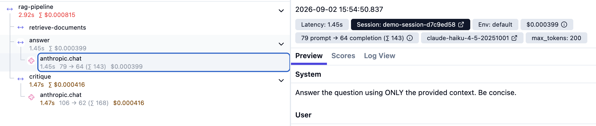

A multi-step LLM application can return the wrong answer while every function inside it succeeds. Nothing throws, so the tooling built to tell you that something broke has nothing to report.
Here is the version of this that keeps showing up. A support ticket arrives about a conversation from three days ago, where a customer asked about the refund policy on an annual plan and got the monthly policy back, delivered with the usual total confidence. You check the deploy log, and nothing shipped that night. You check the error tracker, and there is no stack trace, because nothing crashed. So you run the query yourself, and it answers correctly.
Every function returned cleanly, twice, and that is the problem.
A workflow that retrieves documents, drafts an answer and then reviews that answer has several places it can go wrong, and from the outside those places look identical. When the final answer is bad, the question is which step produced the badness, and "the request completed" cannot answer it.
"I'll just log more"
The first objection to all of this is that structured logging already covers it, and that objection is correct more often than tracing vendors like to admit. If you log the retrieved document IDs next to the query, the refund ticket is solved in one line, with no backend and no vendor. If that is the only kind of bug you have, you can stop reading here.
What structured logging asks of you is that you know in advance which fields
are going to matter. You add doc_ids after the retrieval bug, and
then the next bug is in the reranker, so you add reranker scores, and the one
after that turns out to be a prompt template change that nobody logged at all.
Correlation is also your problem, since a request ID has to be threaded by
hand through every function, every retry and every async boundary that your
logger doesn't already know about. And the questions that are about the shape
of a request rather than its contents, like which step is eating the latency
budget or where the tokens are going, mean reconstructing a tree out of a flat
stream after the fact.
Tracing does not make logging wrong. It records the structure that you would otherwise be rebuilding in your head, every time, from a stream of lines that were written before you knew what you'd need.
Give the trace the same shape as the pipeline
Langfuse has a small hierarchy that maps onto this reasonably well: a session groups related requests, a trace is one end-to-end request, and observations are the individual steps inside it. An observation is either a plain span or a generation, where a generation is an LLM call that carries the model, token usage, latency and cost along with it.
For a small RAG pipeline, I want the trace to look roughly like the pipeline does:
import os
from anthropic import Anthropic
from opentelemetry.instrumentation.anthropic import AnthropicInstrumentor
from langfuse import get_client, observe, propagate_attributes
# Emits OTel spans for every Anthropic call, which Langfuse
# picks up as generations nested inside whatever span is current.
AnthropicInstrumentor().instrument()
langfuse = get_client() # reads LANGFUSE_* from the environment
client = Anthropic()
@observe(name="retrieve-documents")
def retrieve(query: str) -> list[str]:
# vector_store is your retriever (Qdrant, pgvector, ...) exposing .search(query, k)
hits = vector_store.search(query, k=4)
return [hit.text for hit in hits]
@observe(name="answer")
def answer(query: str, context: list[str]) -> str:
response = client.messages.create(
model="claude-sonnet-4-6",
max_tokens=1024,
messages=[{
"role": "user",
"content": f"Context:\n{chr(10).join(context)}\n\nQuestion: {query}",
}],
)
return response.content[0].text
@observe(name="critique")
def critique(query: str, draft: str) -> str:
"""Second pass over the draft. Same shape as answer(), so it is a generation too."""
response = client.messages.create(
model="claude-sonnet-4-6",
max_tokens=1024,
messages=[{
"role": "user",
"content": (
f"Question: {query}\n\nDraft answer:\n{draft}\n\n"
"Is the draft correct and fully supported by the question? "
"Flag anything wrong or unsupported."
),
}],
)
return response.content[0].text
def run(query: str, session_id: str) -> dict:
"""One request = one trace."""
with propagate_attributes(
session_id=session_id,
metadata={"pipeline": "demo"},
):
with langfuse.start_as_current_observation(
as_type="span",
name="rag-pipeline",
input={"query": query},
) as root:
try:
context = retrieve(query)
draft = answer(query, context)
review = critique(query, draft)
except Exception as exc:
root.update(level="ERROR", status_message=str(exc))
raise
result = {"answer": draft, "critique": review}
root.update(output=result)
return result
There are no log messages in there. The decorators and the with
blocks are only describing the structure of the request, so one request
becomes rag-pipeline, and inside it sit retrieval, answer and
critique alongside the actual model calls that happened within those steps.
One thing that will trip you up on the first run: spans are batched and
exported asynchronously, so a short-lived script that exits immediately shows
you an empty Langfuse project and looks broken. Call
langfuse.flush() before the process ends.

retrieve-documents, answer,
critique, with the model calls hanging off the named steps as
generations. Note the naming — your steps carry meaningful names while the
auto-instrumented calls appear as anthropic.chat. Selecting a
generation reveals the model, token counts and cost.
Go back to the refund ticket with that in place. If retrieval returned the monthly-plan document instead of the annual one, you have a retrieval problem, and changing the system prompt will not help. If retrieval returned the right documents and the model still produced the monthly policy, then retrieval did its job and you go look at the prompt, the model, or the logic around the answer step. Same wrong answer, very different bug, and the trace is what separates them.
Naming the steps
There is one small detail here that mattered more than I expected it to. If
you lean entirely on auto-instrumentation, model calls show up under generic
SDK names, which is technically accurate and close to useless when you are
trying to understand your own application. Writing
@observe(name="answer") makes the trace describe your pipeline
instead of the SDK underneath it, so I open the trace and see
retrieve-documents, answer and critique.
Three generic Anthropic calls would tell me a lot less.
What it costs you
Instrumentation adds code, and the honest version of that cost has more than one line item.
Auto-instrumentation takes care of the boring part, since the Anthropic instrumentor captures the model calls, latency and token usage without me wiring any of it manually. What it cannot do is understand the architecture of the application, because it does not know that retrieval and answer are separate failure points and only knows that some functions and some API calls happened. Defining the boundaries that matter is still on you. The combination I ended up liking is to auto-instrument the model calls and then add manual spans around the steps I would actually want to inspect on their own.
There is also such a thing as too much tracing. If every small helper function becomes a span, the trace stops helping, and you have traded a wall of log lines for an elaborate tree that you now also have to read. The test I settled on is practical: if this step failed, would I want to inspect it separately? If yes, give it a span. If not, probably don't.
The runtime cost is the part a skeptical reader actually wants numbers for, so
here is the shape of it. The SDK does its export off the request path.
Creating a span is a cheap in-memory object plus a put onto a queue; the
batching and the HTTP round trip to Langfuse happen on a background thread. So
the latency your users feel is the cost of building spans, not the
cost of talking to Langfuse. That is why I am not going to hand you a
p99 number I took on my laptop and pass it off as yours — measure it on your
own pipeline with one loop timing run() with
AnthropicInstrumentor().instrument() enabled and then commented
out, and report the delta. The architecture is the reason to expect that delta
to be small — you are paying to build span objects, not to wait on Langfuse —
but that is a reason to expect a result, not the result itself.
What happens when Langfuse is unreachable is the more important question, and
the answer is that your request does not care. Export is fire-and-forget into
a bounded in-memory queue: flush() logs an error and retries the
batch, it never throws, and if the queue backs up because the backend is down,
the SDK drops spans rather than blocking or failing the request. You lose
observability data during the outage; you do not lose the user's answer. That
is the correct failure mode for a telemetry system, and it is worth confirming
it is the one you actually have.
Cost is a unit-counting exercise, not a per-trace price. Langfuse bills the unit — the trace itself, plus every observation and every score inside it. This pipeline is one trace, a root span, three step spans and two generations; the trace counts as a unit separately from its root span, so that is seven units per request before you attach a single eval score. A million requests is therefore about seven million units, not one million, and that multiplier is what surprises people on the first invoice. On the Core plan (as of September 2026: 100k units included, then graduated overage that falls from $8 toward $6 per 100k at volume — confirm against the current pricing page before you quote it) seven million units a month lands in the low-to-mid hundreds of dollars.
Which is the sampling question. At demo and low production volume you send
everything and do not think about it. Once units-per-request times requests
gets expensive, LANGFUSE_SAMPLE_RATE is the lever — a
deterministic trace-ID ratio sampler, so 0.2 keeps roughly 20% of
traces and keeps or drops a whole tree atomically, never half of one.
It controls cost and ingestion load together. Reach for it when the bill or
the rate limit tells you to, not before.
Self-host versus cloud collapses onto that same axis. Cloud is the usage billing above with nothing to operate; self-hosting removes the per-unit fee and hands you Postgres, ClickHouse, Redis and object storage to run instead. Below serious volume, cloud is cheaper once you price your own time; above it — or under a data-residency constraint — self-hosting starts to pay for itself.
Why not just use OpenTelemetry?
You can, and Langfuse is built on OpenTelemetry underneath, so generic OTel spans can go to plenty of other backends.
What Langfuse adds is an LLM-specific layer, where a model call is a first-class thing with prompts, completions, model metadata, tokens and cost, and a UI that knows how to display those. You could model all of that yourself in raw OpenTelemetry. Whether that is worth doing depends on what you are usually debugging, since plain OTel is fine if you mainly want normal distributed tracing, and a backend that already understands LLM calls is convenient if the thing going wrong is usually an LLM call.
Worth knowing before you wire this into an app that already emits OTel: as of
the Python v4 SDK, Langfuse no longer exports every span by default, and
instead filters down to spans it created, spans carrying gen_ai.*
attributes, and spans from instrumentation scopes it recognises as
LLM-related. That keeps HTTP, database and framework-internal noise out of
your traces, which is usually what you want. It also means a custom OTel span
you added yourself may silently not appear, and dropping an intermediate
parent while keeping its children can leave you with a disconnected tree. If
your trace looks wrong in a way that makes no sense, turn on
LANGFUSE_DEBUG and check what is being filtered before you assume
the instrumentation is broken.
The less fun part: data
Useful traces contain a lot of data, including prompts, model responses, retrieved documents and raw user input. In the refund example that already means customer text and internal policy documents leaving for an observability backend, and in a real production system it gets more sensitive than that. Your observability system can see everything your model sees, which is worth deciding about deliberately rather than a month after the fact.
Langfuse gives you two hooks here and the difference between them is a trap.
The older mask parameter runs when Langfuse SDK attributes are
created, so it only sees data you set through Langfuse's own APIs, and it never
inspects the raw OpenTelemetry attributes that third-party instrumentation
produces. Which means it does not touch the auto-instrumented Anthropic calls,
so the prompts and completions you were most worried about sail straight past
it. The newer mask_otel_spans hook runs at export time on raw span
attributes, including spans from third-party instrumentors, so that is the one
you want if you followed the advice above and auto-instrumented your model
calls.
Two smaller things in the same area. mask_otel_spans runs on the
export worker thread and needs to be fast and deterministic, since a slow mask
backs up the export queue, and a mask that raises drops the entire batch. And
if you are fanning the same spans out to a second backend through a separate
exporter, that backend gets its own unmasked copy, so masking has to be
configured there too.
Where this leaves us
Flat logs are not useless. They are good at exceptions, failed connections, process state and obvious latency problems, and none of that goes away. They are just not enough on their own to explain a system where the code can execute perfectly and the result can still be wrong, because for that you need the structure of the execution and not only its outcome.
The useful move is going from:
"The answer is wrong."to:
"Retrieval returned the wrong document."That second sentence is a starting point.
The structure keeps paying off after the bug is fixed, since the same trace tree is where per-step latency, cost, evaluations and production examples that become regression tests all eventually hang. None of that works until the underlying trace actually represents the application, which is why I'd start there: make the trace look like the system you are trying to understand.